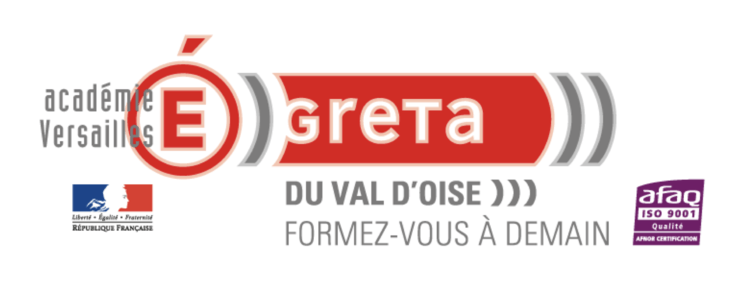
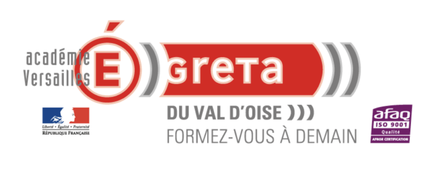

Conception et
développement applications
OBJECTIF(S)
- Concevoir des applications objets, en utilisant le langage de modélisation Merise
- Développer des interfaces Web ou mobiles
- Développer des applications métiers en utilisant le langage Java et la plateforme d’entreprise Java EE
- Travailler dans un environnement professionnel : utilisation d’IDE, d’outils de gestion de version, d’outils de build, d’outils de tests
- Mettre en oeuvre le framework Spring
PRÉREQUIS
- Niveau d'entrée exigé : Niveau 5 (Ancien niv. III) - BAC +2
- Maîtrise du langage de programmation
CONTENU
BDC 1. CONCEVOIR ET DÉVELOPPER DES COMPOSANTS D’INTERFACE UTILISATEUR EN INTÉGRANT LES RECOMMANDATIONS DE SÉCURITE
- Maquetter une application.
- Développer une interface utilisateur de type desktop.
- Développer des composants d’accès aux données.
- Développer la partie front-end d’une interface utilisateur web.
- Développer la partie back-end d’une interface utilisateur web.
BDC 2. CONCEVOIR ET DÉVELOPPER LA PERSISTANCE DES DONNÉES EN INTÉGRANT LES RECOMMANDATIONS DE SÉCURITÉ
- Concevoir une base de données.
- Mettre en place une base de données.
- Développer des composants dans le langage d’une base de données.
BDC 3. CONCEVOIR ET DÉVELOPPER UNE APPLICATION MULTICOUCHE RÉPARTIE EN INTÉGRANT LES RECOMMANDATIONS DE SÉCURITÉ
- Collaborer à la gestion d’un projet informatique et à l’organisation de l’environnement de développement.
- Concevoir une application.
- Développer des composants métier.
- Construire une application organisée en couches.
- Développer une application mobile.
- Préparer et exécuter les plans de tests d’une application.
- Préparer et exécuter le déploiement d’une application.
NIVEAU DE SORTIE
VALIDATION
- Attestation de fin de formation
- Attestation de compétences
- Attestation de compétences
- Titre Professionnel Développeur Concepteur d'applications (Niveau Master)